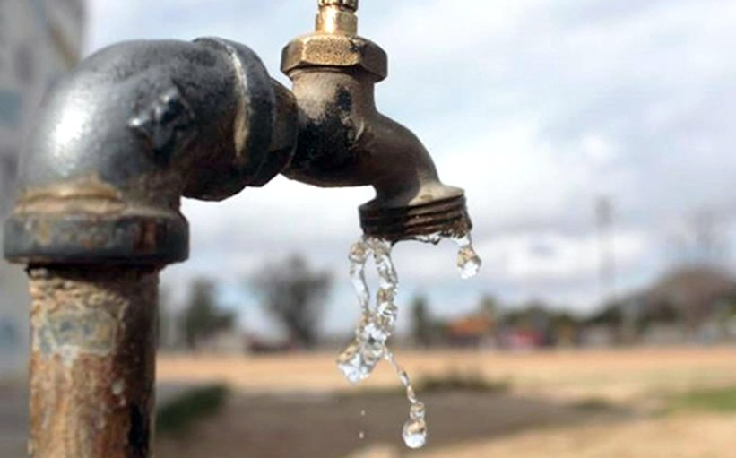

55 municipalities register shortage of drinking water due to drought
A study carried out by the Laboratory of Economics of the Education of the Javeriana University calculated the percentage of educational centers that are located in blocks where the largest number of homes around does not have the service of aqueduct. According to this report, at least 11% of schools of the official sector in the country are located in neighborhoods where more than half of the houses do not have an aqueduct. I know also found a large gap because the same occurs only in 1% of private schools, which would become a serious problem of inequality for the return to alternation and access to water in order to carry out the correct protocol washing hands in schools amid the pandemic. The study, also found that there are only differences between the public and private sector, but also between rural areas and urban.

At the departmental level, the heterogeneity of the data is highlighted
that exists between departments. On the one hand, in departments
such as Quindío and Bogotá, the percentage of official headquarters located
in blocks where more than half of the homes do not have
aqueduct is null; while, on the other, in Magdalena,
Córdoba, Chocó, San Andrés and Guainía, this percentage of headquarters
It is greater than 30%, THE REPORT OF THE JAVERIANA UNIVERSITY INDICATES.

This research suggests that for these venues that do not have the water service, educational processes could follow paralyzed in the pandemic, without returning to the presence. It which, according to the study, “has negative repercussions on students. This is without mentioning the possible consequences of absence of classes on the increase of dropouts, work and the recruitment of minors in criminal groups ”.